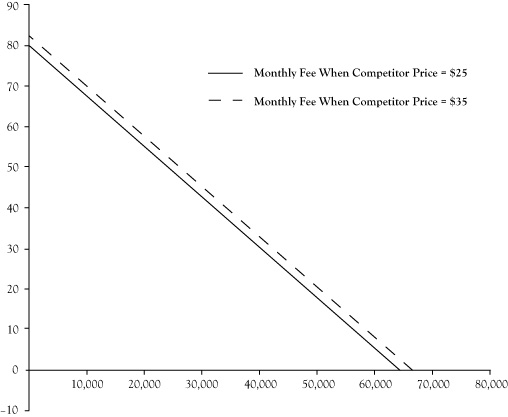

Identifying the key determinants of demand and developing demand functions gives a business manager a better understanding of his customers. A benefit of that understanding is an improved accuracy in forecasting the demand levels for their products and services in an upcoming period. Most businesses need to plan production activities well in advance of when the goods and services are actually provided to the consumer. Businesses need to have an adequately sized operation, have a sufficient staff in terms of size and training, and obtain any necessary resources for production. These capabilities are usually not possible to achieve overnight. For some goods, production is a process that takes significant time from initiation to completion, such as constructing apartments or office space that will be leased to customers. Even businesses that provide products or services “made to order,” where most of the direct organization or production activities occur after a purchase is made, usually need to have supplies, trained labor, and management structures in place in advance of the order to be in a position to negotiate a sale.
Figure 3.1 Shift in Demand Curve for Broadband Service Caused by Increase of Competitor Price From $25/month to $35/month
Without some concrete estimate of what level of demand will result after these planning, designing, and production activities, a business may find itself with an excess of unused capacity or unable to serve the demand that follows. Excess capability is costly because idle resources have an opportunity cost but do not contribute to sales or revenue, especially when the unused resources spoil and cannot be used at a later time. When businesses set production targets too low, they discover missed opportunities for profit and unmet demand that is likely to discourage those consumers from being customers in the future.
To a limited extent, a business may be able to alter future demand to be more in line with its capacity because it has control over some determinants of demand, like pricing, promotion, and location. If the business is surprised by demand levels that are higher or lower than expected, these market strategy elements can be adjusted to either stimulate or diminish demand to conform to its production capabilities. Still, the financial performance of an enterprise is improved when the demand is consistent with the levels anticipated in the initial planning stages.
Further, most businesses are not in control of all the key determinants of demand. The business cannot control the direction of the overall economy and consumer incomes. The business may be able to guess at, but not control, actions by other companies that sell substitute and complementary goods and services. Anticipating the impact of these outside forces is critical.
Businesses can improve demand forecasting with their demand functions using the future values of determinant variables in those demand functions. Forecasts for widely followed economic indicators like disposable income are available from public releases or private forecasting services. If the business has a record of data for these uncontrollable variables, they can apply quantitative forecasting techniques like time series analysis or develop casual models that relate these factors to other variables that can be forecast. Readers are encouraged to look at a text in business forecasting for assistance in doing quantitative forecasts.One business forecasting text is a book authored by Hanke and Wichern (2009).
For variables where past patterns may not continue into the future, like competitor actions on pricing and promotion or unexpected climate events, a business can construct scenarios in which management postulates settings for these factors and then develops a demand forecast for each scenario. Although the future will almost certainly not conform exactly to any single scenario, the exercise prepares them to monitor for changes in these factors and be ready to make a prompt response whenever a similar scenario emerges.